Browsers often offer tools to make it easier for developers to do their work. Each browser has its own ways, but most of them have some common tools. In this section, we will study and review the tools offered by Firefox. You can find detailed information from the original source here .
To access Firefox’s developer tools, you may go to the Application Menu > More Tools > Web Developer Tools. Alternatively, you can use the default keyboard shortcut: CTRL+SHIFT+I.
Note: In most browsers, you can also use the function key F12 to quickly access the developer tools.
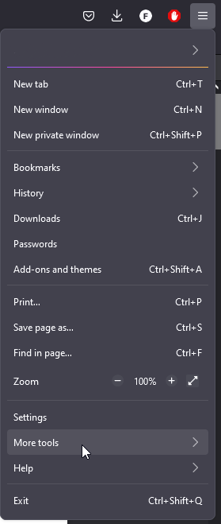 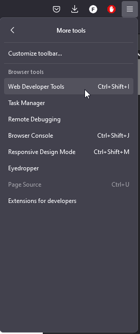Now we will do a rundown of the different tools offered by Firefox:
- Inspector: Used to inspect and redefine the code live, so yo can see how the changes affect the page in each moment.
- Console: Used for tracking of CSS, JavaScript, security, and network issues.
- Debugger: JavaScript debugger.
- Network: Used to monitor network requests from and to the site.
- Storage: Used to add, modify and remove cache, cookies, databases and sesión data.
- Responsive Design Mode: Used to test sites on emulated devices in the browser.
- Visual Editing: Support to fine-tune animations, alignment and padding.
- Performance: Used to find and unblock bottlenecks, streamline processes, and optimize resources.
- Memory: Used to find memory leaks.
The Inspector is used to examine and modify the HTML and CSS of the page. It can be used both in a local copy of the page loaded in Firefox, or in a remote target (e.g. Firefox for Android). This is how it looks:
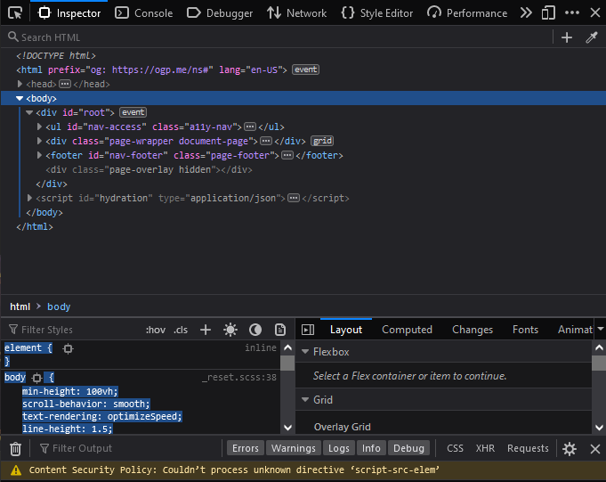Using the Inspector, you can:
- Examine and edit HTML.
- Examine and edit the box model.
- Inspect and select colors.
- Reposition elements in the page.
- Edit fonts.
- Visualize transforms.
- Examine and edit CSS, including filters, shapes, grid layouts and flexbox layouts.
- Examine event listeners.
- Work with animations.
- View images.
The Inspector has a UI to quickly access the three top-level components:
- HTML pane.
- CSS pane.
- Layout pane.
The Inspector also has quick acces to other useful panes or views, like:
- The Rules view, that allows to quickly see all the rules applied to any given object.
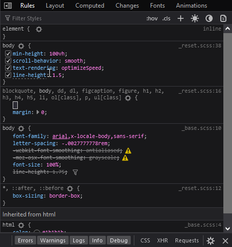 - The Changes view: where you can see the chages applied while in the rules view. 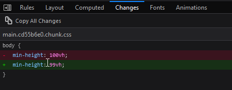
- The Computed view: which shows the CSS style applied to the current selected element. 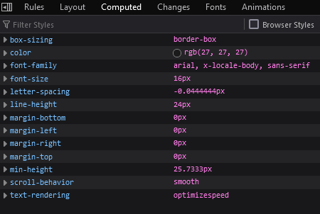
- The Compatibility view: shows CSS compatiility issues for properties applied to the selected element. It will show icons for the browsers that support the properties, and will note properties that are either experimental or deprecated. 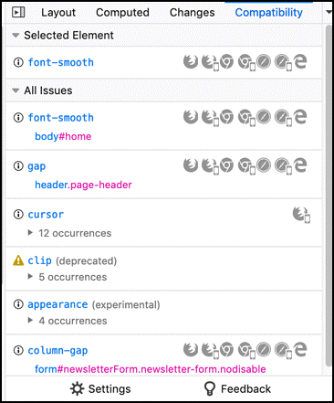
- The Fonts view: show all the fonts used in the whole page, with editable samples.
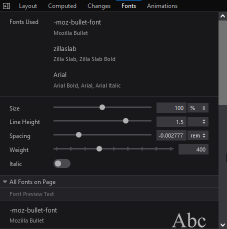 - The Animations view: shows details of animations applied to the selected element and allows the developer to pause them. 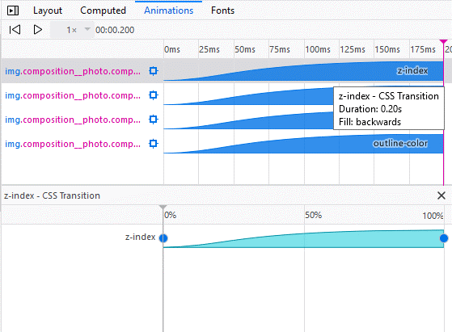
The Web Console allows the developer to interact with the page by executing JavaScript code in the context of the page itself. It also logs all the information associated with the page. The Console has a keyboard shortcut: CTRL+SHIFT+K.
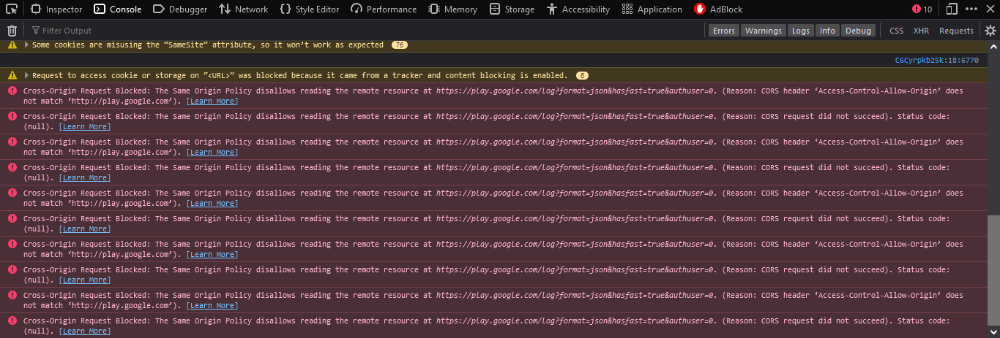Also, you can use some commands that are not JavaScript. They are listed here.
The Debugger allows the developer to examine step by step JavaScript code and modify its state to track down bugs or do testing.
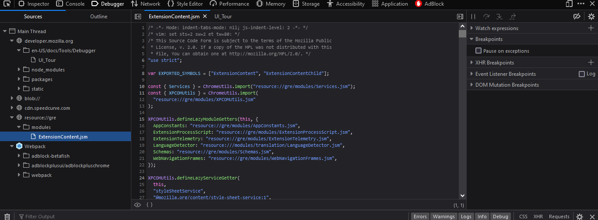The use of the debugger is like many others: with breakpoints you can stop the execution at a given moment, and can also go step by step through the code. It also has watch expressions and logpoints.
It shows all the HTTP requests Firefox makes: how long they take and detailed information about the request. The shortcut for this tool is CTRL+SHIFT+E. When you first open the monitor, it will not show any information, since it starts logging the requests from the moment you open it.
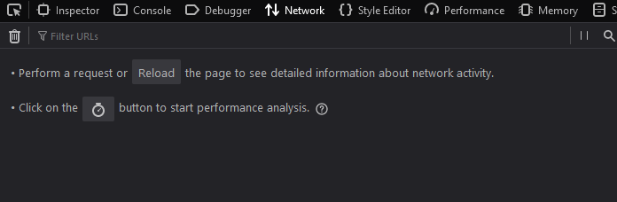After reloading the page:
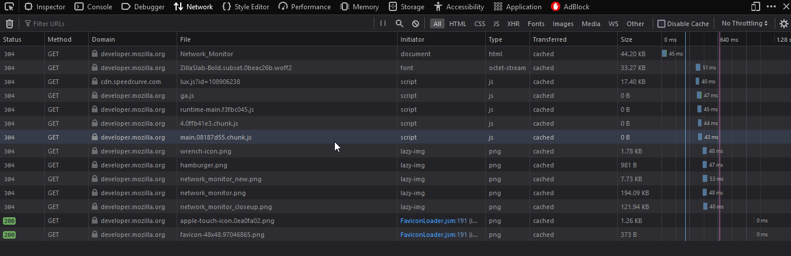
There is a load of useful information here.
To access an indepth article of the Network Monitor, go here.
The Storage Inspector allows the developer can be used to examine the following types of data stored:
- Cache storage: any caches created using the Cache API.
- Cookies: All the cookies created by the page or any iframes inside the page.
- IndexedDB: All IndexedDB databases created by the page or any iframes inside of it, their Object stores, and the items stored in these Object stores.
- Local Storage: All local sotrage items created by the page or any iframes inside of it.
- Session storage: All session storage items created byb the page or any iframes inside it.
At the moment the Storage inspector allows read only access, but storage editing is in the making for future releases.
The storage inspector separates the different types of storage.
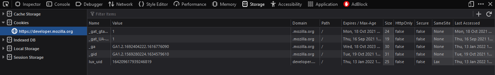Responsive design is a type of design which objective is to allow access to the widest range of devices. This mode allows the developer to simulate screen size, pixel density and touchscreen on one device, so that the website design can be tested.
This mode is a toggle, and to activate it you have to click the Responsive Design Mode button on the Developer Tools, or use its keyboard shortcut: CTRL+SHIFT+M.
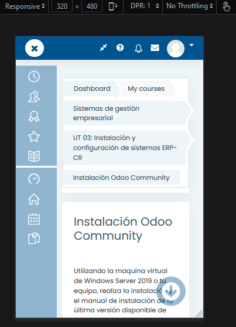The default screen size when activated is 320x480 px. To change the properties of the simulated device, you can click on the Settings button.
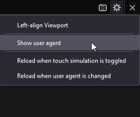The style editor allows the developer to either view and edit stylesheets applied to the page; create new stylesheets for the page; or import and apply stylesheets for the page.
To the left of the editor are the CSS files, and on the right is the editor itself.
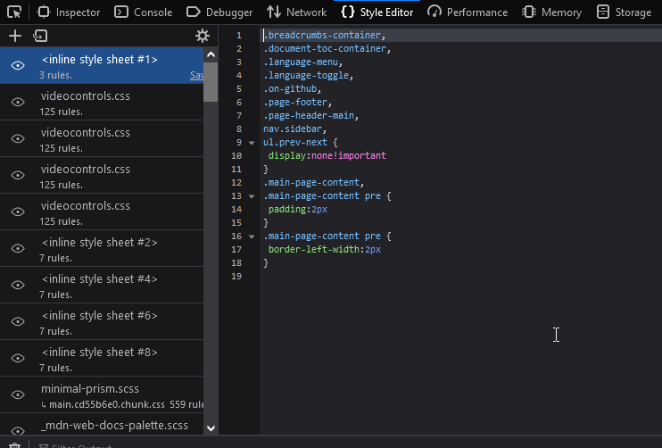By clicking the eyeball button at the left side of the files, you can toggle the use of said file on and off. Also, any changes made in the editor are immediately applied to the page. And the editor supports autocomplete!
The style editor has a third section: the media sidebar. It appears whenever the selected document has a @media rule. The sidebar provides a link to the line where the rule is written.
The Performance tool is used to study the site’s responsiveness, JavaScript performance and layout performance. The tool profiles the page over a period of time, and then shows an overview of what te browser did to render the page during the profile.
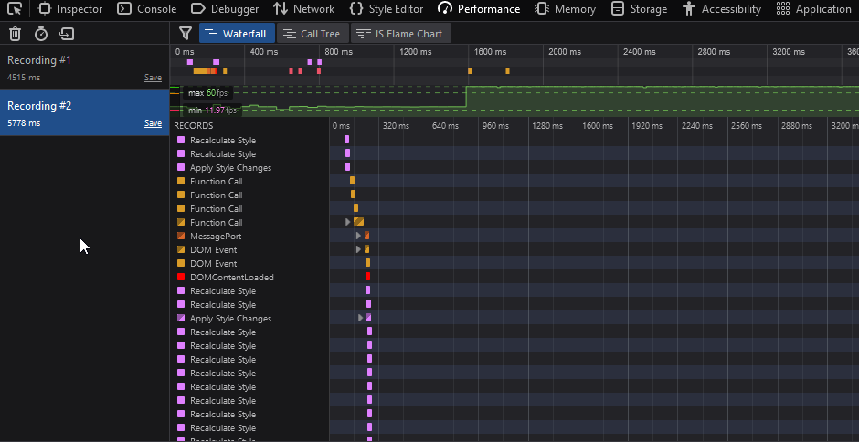The performance tool also has other sub-tools for detailed examination of some aspects of the profiling. There are four sub-tools:
- The Waterfall (the one used in the picture above) shows the different operations the browser performed.
- The Call Tree shows only the JavaScript functions the browser spend more time in. 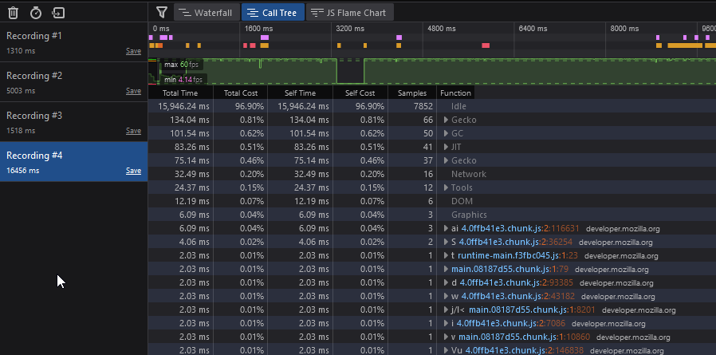
- The Flame Chart shows the JavaScript call stack during the profile. 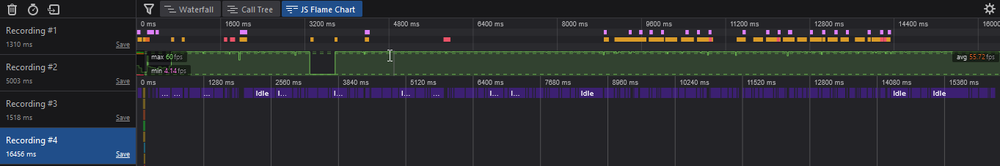
- The Allocations view only appears when you select the “Record Allocations” in the Performance tool settings, and it shows the heap allocations made by the code during the profile. 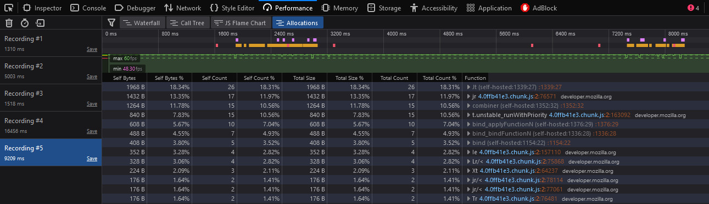
The Memory tool allows the developer to take a snapshot of the memory heap of the selected tab. It then provides views of the heap that indicate which object are using memory and where exactly in the code there is memory being allocated.
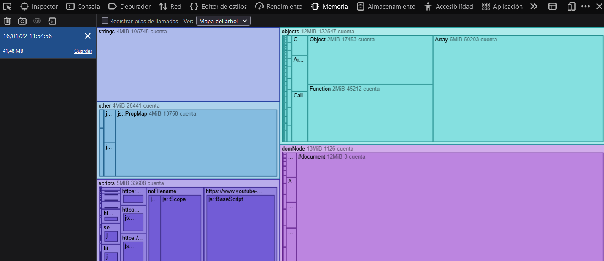To analyze the snapshots, the tool provides three views:
- The Tree map view: it’s the one shown in the picture above.
- The Aggregate view: shows memory usage as a table of allocated types. 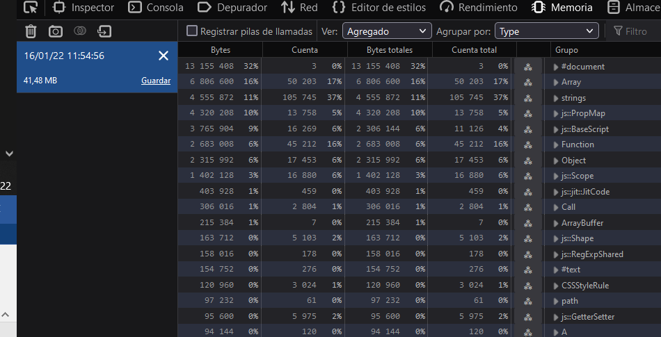
- The Dominators view: shows the size of objects plus the size of other objects that they keep alive through references. 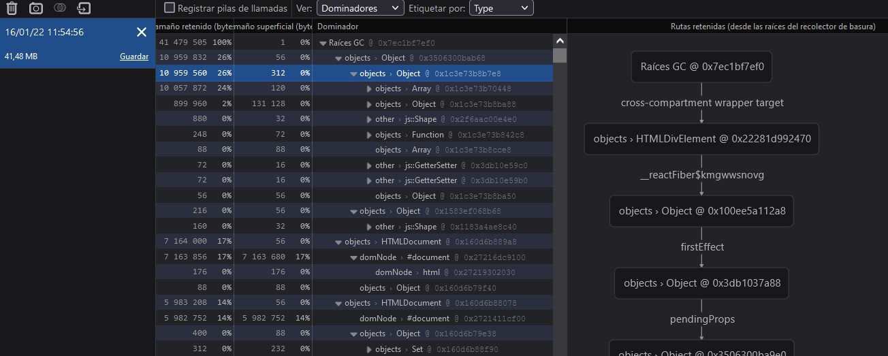